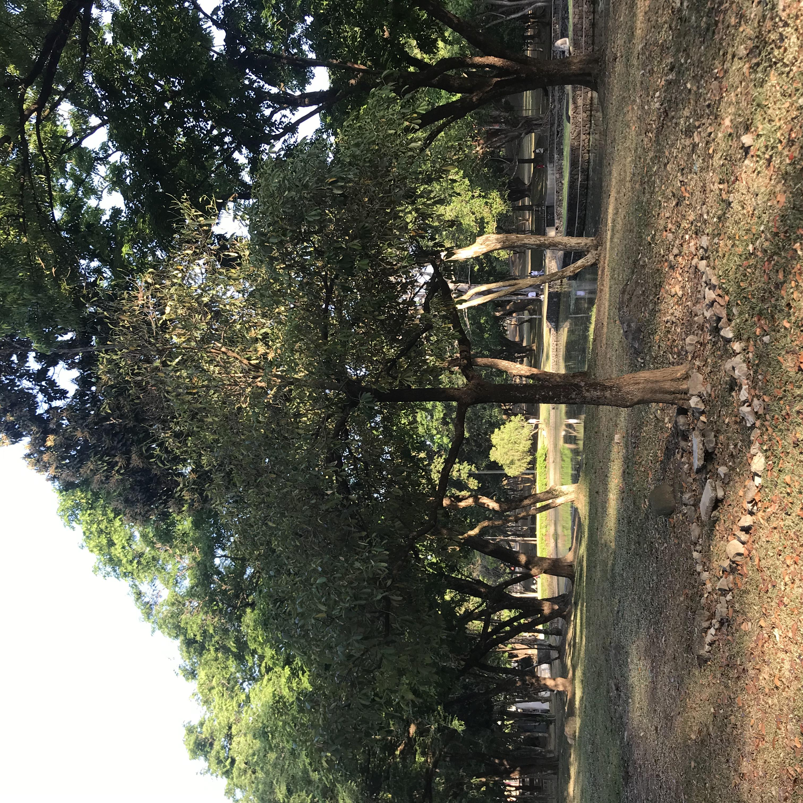

hello po hahaha, ✨
kaaarleeey :'> una sa lahat, thank you so much! you have no idea pero u've made a big impact sa life ko good and bad hahaha. i'm thankful na nagmeet tayo sa valo (no regrets promise ko yan hihi). andami kong natutunan sayo. i hope hindi ito maging burden sayo.. gusto ko lng ng maganda yung closure natin freny hehehe. checherish ko yung mga kagaguhan and mga downs natin hahaha. karley, gusto kong makamit mo ung goals mo sa life and gusto ko ring maging successful ka in life. karley.. tandaan mo u have an old friend na may care pa rin sayo kahit na maglelet go na siya sa life mo. wish niya sayo maging masaya ka in the end and magkaayos kayo ni anne :>. naniniwala ako karley na walang masamang tao sa mundo, sadyang namisguide lng sila. and super naiintindihan ko kayo both. kailangan matured tayo sa pagintindi sa mga tao. i hope naiintindihan mo why i need to let go..
before nung custom game natin sa valo [yung last]. kinausap ko si freny mo, si ga, hahaha. sinabi ko na rin ito sa kanya. u can talk to him kung ano napagusapan namin that time. i was holding back my tears when i was talking to him karley. masakit din sa part kong maglet go kasi mahal kita and yung connection na meron tayo, but i have to [for my peace]. inuuna ko right now yung sarili ko karley. i'm sorry, karley. nahihirapan kasi rin ako kung saan ako lulugar sa life mo and medyo di ako at peace nung time na di tayo makapagcommunicate [cause of comm gap] and sa ibang bagay pa. i understand those parts talaga.
i'm sorry din karley na nagkafeelings ako sayo. pero i have no regrets. napamahal ako sa kung sino ka. kahit na may ibang sides na natuturn off ako, iba eh, lodi ka hahaha. iba yung connection natin, di ko madescribe. edi sana ghinost na kita kung di kita feel and also kung happy ka nun hahaha. noong nagkwento ka about sa side mo, nagkaroon ako ng concern and care sayo nung umiiyak ka na. yung time na may suici... tots ka.. ayaw kitang pabayaan that time. gusto kong maramdaman mo na there's someone who's willing to help u. you're going through a lot ngayon and wish ko sayo na kung sino ung malalapit na friends mo or kung sa mother ka maging open, magiging masaya na ako sayo and support kita na merong people ka pang pagsasabihan ng difficult probs mo and i just want u rin to have a peace of mind, karley.
gusto ko mas maging vocal ka pa sa pagexpress ng nararamdaman mo sa ibang taong kaconnect mo like feel mo na iintindihin ka nitong mga people na ito sa super down moments mo. if hindi mo saken sinabi yung pinaka down sht mo before, hindi ko tlg alam kung ano mangyayari sayo.. :< karley ha, there's a reason to live. we have different reasons. gusto ko in the future or start mo na ngayon na mas mahalin mo pa ang sarili mo. you're at your critical age na dapat mas maalagaan mo self mo kaysa sa iba.
i won't speak about ur relationship kay anne kasi buhay niyo na yan ahahaha. basta karley, kapag sumobra na siya sayo.. alam mo na yung gagawin. pero if may nakikita kang pagbabago sa kanya in a good way, i'm happy for u 🤍
remember these emojis: 🤍 🍃 🌊
kahit na mawawala na ako karley gusto ko yung best sayo in life. i have no grudges sayo, master, hahaha. galingan mo sa work mo para makapagibang bansa ka rin ha :> merong someone na susupport sa goals mo even if wala na siya sa life mo, kasi mahal ka niya.
nasa healing stage na ako karley, umiyak na ako these past few days para maprocess ko yung gagawin ko hehehe. i have to be strong. magheal ka rin after ng last call natin karley 🍃
finoforgive na kita sa lahat karley and sana maforgive mo ako sa last move ko sayo, pasensya uli karley.
ichecherish ko lahat ng pinagsamahan natin kasama friends mo :'>. cherish the ones na sinusupport ka sa ups and downs mo. sa world rn, mahirap ng makahanap ng taong super iintindi sa isang tao. meron ka pang mamemeet na new peeps in the future, just talk to them and maybe magclick din kayo dba hahaha. you may never know unless you talk to new people karley. sa atin nga ang unexpected eh ahahaa what more sa mga mamemeet mo in the future ;>
just imagine rn when u're reading this na i'm hugging u genuinely na matagal and nakasmile sayo :'> na may sinasabi ako sayo na: "karley, magiging okay din ang lahat, trust the process and believe in yourself. nasaan mang lupalop ako habang binabasa mo ito. just remember, support kita and naiintindihan kita 🤍. you'll always have a piece in my heart, karley [remember that hehehe] :P."
if tinadhana man tayo again in the future, i'd be glad to welcome you again in my life. you may never know what the odds are. if hindi naman, welp, that's life hehehe.
wag kang mawalan ng pag-asa sa future-self mo.
ay teka may send akong pic here hahaha. kapag pumunta ka sa upd like exercise, run, at kung ano pa man yan. try to find this tree. pakita mo sa mga taga-upd itong pic. save mo ung image file. ito ung gusto kong puno kasi there when i need to be alone hehehe. nakakakalma ung tree for me hehehe and also merong hidden message na nakalagay dyan. di ko alam sino naglagay pero maganda message. try to find this tree ha sa kung kailan mo gusto pumunta there hehehe. i know na nature lover ka rin hehehe. punta ka dyan ha, kung kailan mo trip 😄
paano ba yan, i have to go karley.. hehe :>. alam kong masakit pero we have to let go and i know makakamove on ka rin. kaw pa ba? hahaha lodi kita eh, master XD. karley, i have one request, please forget my phone number okie? dw, di ko tatandaan number mo 💟. alam kong gusto mong secured and private ka rin hehehe. i hope naiintindihan mo ung reason ko rin kung bakit gusto ko pakalimot sayo ung number ko.. hehe..
ingat ka lagi lodicakes and thank you again sa lahat 🤍. sabihin ko na rin gusto kong sabihin sayo, i.. love.. you.. karley.. hehehe. [wala akong regret dyan sa sinabi ko, more than friends yung nafefeel ko sayo pero ayun dats layp u know hehehe. naappreciate kita eh wala ka ng magagawa dun ahhahaa. salamat ng super again and pasensya again ha.. pakamusta rin pala kila ga and bogs hehehe. mahal ko kayo 🤍. kayo ung taong nagpapabago saken na to improve myself further and to remove this last old version of mine. meron nanaman tayong new chapter karley hehehe sulitin natin ung mga susunod na mga kabanata natin sa life okie? [sending u a genuine virtual hug]... mamimiss kita.. :'>
farewell, karley.
always take care of yourself.
~ st. mika 😇